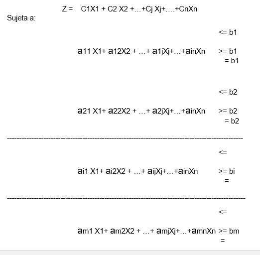
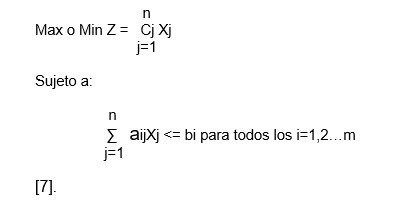

2.2 Forma general del problema en programación lineal
Max o Min

Elaboración propia
Donde: Z = función que debe maximizarse o minimizarse.
Xj= j-esima variable de decisión.
Cj = coeficiente de ganancia o costo de la j-esima variable.
aij = coeficiente de la j-esima variable en la i-esima restricción.
bi= limitación de la capacidad de la i-esima restricción.
La fórmula condensada de la fórmula anterior es:

Elaboración propia